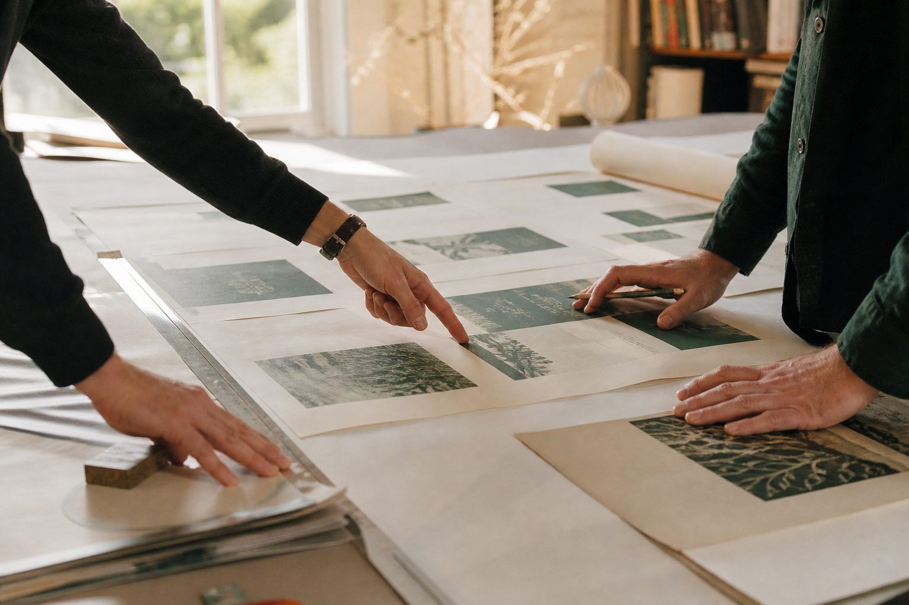

About the studio
D Philhower Studio is a graphic and website design practice rooted in northern New Jersey, working with clients in and around Morristown.
Every design problem is different—so the solution should be too. The studio focuses on color, layout, and craft that solve real business needs: a clearer brand, a site that converts curiosity into contact, materials that feel worth keeping.
Hospitality and small business work is a particular strength—building restaurant and retail brands from the ground up so the identity, menu, and website all speak the same language.
Clients come from Morristown, Madison, Bernardsville, Mendham, Randolph, and nearby towns across Morris County who want a local partner instead of a distant template mill.
